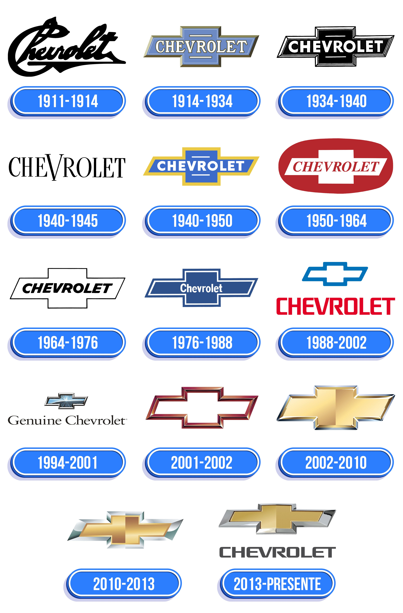

Explore como a famosa gravata borboleta da Chevrolet se transformou ao longo de mais de um século, refletindo mudanças no design, na cultura e na inovação automotiva. Prepare-se para uma viagem no tempo contada através de traços, cores e emblemas marcantes.
por:Vitor steiner wiggers
Nesta jornada visual, você vai descobrir como um simples traço se transformou em um dos maiores símbolos automotivos do planeta. Tudo começa em 1913, quando o fundador William C. Durant introduziu a famosa gravata borboleta, cuja origem envolve lendas que vão desde papéis de parede franceses até anúncios de jornais.Ao longo das décadas, o emblema acompanhou a evolução do design e da sociedade. O visual robusto e escuro dos anos 1920 e 1930 deu lugar a brasões coloridos na era de ouro dos anos 1950. Já no fim do século XX, a marca apostou no minimalismo e na força da silhueta pura. Hoje, a icônica gravata dourada com textura estilizada une tradição e modernidade, preparando a identidade visual da Chevrolet para o futuro digital e elétrico